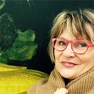

Åsa Hällgren Lif
Konstnär.
| Född: | 1956 Högby fs, Kalmar län. [1] |
|---|
| Vigsel: | 1987 Högalids fs, Stockholms stad. [2] |
|---|
Noteringar
ÅSA HÄLLGREN LIF
1981-1986 Konsthögskolan i Stockholm
UTSTÃLLNINGAR/visningar
2018 Galleri Eva Solin
2016 Sjögatan Sju, Sundsvall
2016 Lilla Galleriet , Umeå
2015 Galleri Eva Solin, Stockholm
2013 Galleri Eva Solin, Stockholm
2013 Tomarps Kungsgård
2013 Galleri Remi, Östersund
2012 Studio L2
2012 Bergdala konstgalleri
2012 Galleri Eva Solin
2012 "Stoff"Centralgalleriet, Gävle
2011 "Konstens par", Konstgalleriet Hälleforsnäs
2011"Månadens konstnär", Vallentuna konstförening
2011 Galleri Monica Strandberg
2010 Galleri Hälleforsnäs
2010 Loungen, Konstnärshuset, Stockholm, c/o Galleri Ahnlund
2009 Galleri Mariann Ahnlund, Umeå
2009 Galleri KAZ, Västerås
2009 Galleri Monica Strandberg, Kalmar
2008 Konstakademin (stip.-utställning)
2008 Konstmässan, Sollentuna
2007 Konstakademin (stip.-utställning)
2007 MARKET, Konstakademien
2006 MARKET, Konstakademien
2006 Galleri Mariann Ahnlund, Umeå
2005 Galleri KAZ, Västerås
2005 Sthlm Art Fair, Galleri Mariann Ahnlund
2004 Sthlm Art Fair, Galleri Mariann Ahnlund
1995 Skapelser - för 26 kyrkor
1994 K-BANAN Kultur/Konst/Kommunikation (Kinnekullebanan)
1993-1994 Flaggor kring Kinneviken (Kiel, Tyskland 1994)
OFFENTLIGA ARBETEN
2009 Entré, Rättspsyk. Falköping
2004 Råcksta sjh, Stockholms konstråd, utomhusgestaltning, skisstävling
2001-2002 Hus för avsked, entré, Karolinska sjh. (Solna stads miljöpris 2003)
2000 Rättsmedicinska anstalten, Sundsvall, skisstävling
1997 Foajè, Norrbackainstitutet, Karolinska sjukhuset
1995 Plåt/lackfärg/collage för Länsstyrelsen i Skaraborgs län
1990 Målningar för Mariatorgets tunnelbanestation
1988 Trapphus för HSB, Umeå
1983-1985 "Samisk natt" - Umeå kommun, Sessionssalen,
blyinfattat planglas 400x500
(Litt: Glasmålning, Carina Bjuhr,
Konstvet.inst. Umeå univ. 1988)
STIPENDIER i urval
Konstakademien: William Nordings stip.
Konstnärsnämnden, tvåårigt arbetsstipendium
Konstnärsnämndens ettårigt arbetsstipendium
A Th Sandbergs stipendium
S P Mathisons stipendium
Akademiens s.u.-stipendium
Helge Ax:son Johnsson
Längmanska fonden
Ida Unmans donationsfond
Fredrika Bremerförbundet
Norrlandsförbundet
Personhistoria
Dokument
Källor
| [1] | Mtl Sveriges befolkning 1960 |
| |
| | |
| [2] | Mantalslängd 1991, Stockholms län |
| |
| | |
| [3] | RTB 80, SPAR 90, SDB7_03714270 |
| |
|
|  |
| Åsa Hällgren Lif, konstnär |
|
{kind=link}